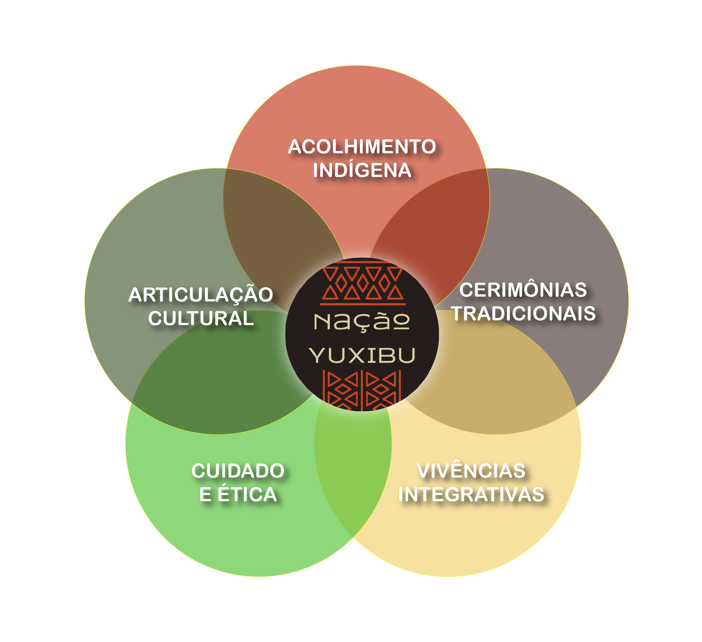
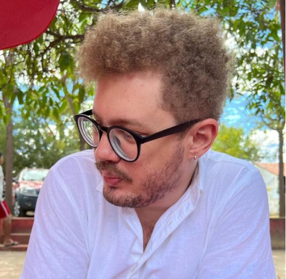

Plataforma Livre Nação Yuxibu
Verdade em unidade: do coração da floresta para o mundo!
Apoie a Construção da plataformaManifesto
O ciberespaço também é território!
Defendemos que os povos originários ocupem e transformem o ambiente virtual a partir de seus próprios conhecimentos, fortalecendo suas tradições, modos de vida e luta por direitos.
A Plataforma Livre Nação Yuxibu, ao ser desenvolvida como Software Livre, afirma o protagonismo indígena e mostra como é possível o uso inclusivo das tecnologias digitais, nas quais a autonomia, a identidade e o saber ancestral se fazem presentes.
POVO HUNI KUĨ
O Coletivo Nação Yuxibu

Acolhimento Indígena
O acolhimento indígena garante condições adequadas, seguras e respeitosas para a presença dos povos originários na troca intercultural, preservando a autonomia e os modos tradicionais de condução nas suas atividades. Todo o processo é orientado com responsabilidade e ética.
Cerimônias Tradicionais
As cerimônias conduzidas pelo povo Huni Kui são rituais ancestrais de aprendizado e reconexão com os saberes originários e o sagrado. Cada cerimônia acontece a partir da tradição viva e da responsabilidade e compromisso com o cuidado coletivo.
Vivência Integrativa
As vivências integrativas são experiências cuidadosamente conduzidas que preparam e organizam o campo físico, emocional e relacional dos participantes, anterior às cerimônias.
Por meio de práticas corporais, sensoriais e de consciência, facilitam o enraizamento, a abertura perceptiva e a integração profunda da experiência que será vivida na cerimônia tradicional Huni Kui.
Cuidado e Ética
O cuidado com os participantes é orientado por princípios éticos e prevenção de riscos, respeitando o bem-estar físico e emocional.
Antes das cerimônias, são realizadas anamneses e entrevistas com escuta atenta e responsável, conduzidas por profissionais qualificados, garantindo sigilo das informações, compreensão dos limites e suporte adequado ao longo de todo o processo.
Articulação Cultural
A articulação cultural promove o intercâmbio entre os saberes tradicionais indígenas, as instituições educacionais e a sociedade civil, a fim de promover a produção artística e difusão dos conhecimentos dos povos originários através da construção de redes, projetos de pesquisa e extensão, apresentações, exposições, aulas e vivências que visem proporcionar uma troca de estudos e experiências.
Plataforma em Construção
Apoie a Construção da plataformaA Plataforma Livre Nação Yuxibu consiste no desenvolvimento de uma plataforma online, na modalidade software livre, cujo propósito é apoiar indígenas da etnia Huni KuĪ no compartilhamento da cosmovisão de seu povo.
Cultural
Cultural
Divulgação do cronograma de atividades culturais planejadas e a construção de um acervo para documentar práticas e atividades realizadas.
Socioambiental
Socioambiental
Interação entre os membros para trocas de serviços e experiências, fortalecendo relações interculturais que criem novas formas de relações sociais e com a natureza.
Educacional
Educacional
Espaço para a realização de aulas ministradas pelos próprios indígenas, bem como para fornecer treinamentos aos colaboradores.
Financeira
Financeira
Espaço livre e seguro para os indígenas venderem sua arte, artesanato e objetos diversos (marketplace), além de viabilizar doações, em consonância aos princípios de economia criativa e sustentável.
Por que Software Livre?
O software livre oferece uma oportunidade poderosa para que as comunidades indígenas e outros grupos subalternizados personalizem a tecnologia de acordo com suas realidades culturais e sociais. Além disso, o uso do software livre pode fortalecer redes colaborativas, já que seu desenvolvimento frequentemente se baseia no compartilhamento de conhecimento e na cooperação entre diferentes povos e culturas.
Dessa forma, ele se apresenta como uma alternativa viável para enfrentar as desigualdades impostas pelo chamado colonialismo digital, abrindo caminhos para uma tecnologia verdadeiramente inclusiva e participativa.
Saiba mais
O acesso à educação, à informação e à disseminação do conhecimento estão fundamentalmente relacionados aos movimentos de tecnologias abertas. Dentre esses movimentos, o movimento de Software Livre é o que mais se destaca. Considera-se que a adoção de softwares livres em prol do desenvolvimento humano com igualdade e equidade, é uma alternativa ao acesso democrático às tecnologias, dado que o software livre é aquele disponível com a permissão para qualquer um usá-lo, estudá-lo, copiá-lo, e distribuí-lo, seja na sua forma original ou com modificações, seja gratuitamente ou com custo (STALLMAN, 2002).
Em um contexto social dominado pela plataformização do viver humano, a Plataforma Livre Nação Yuxibu, ao ser desenvolvida como software livre, com servidor de dados próprio (um espaço de disco no servidor da UFBA), para fins específicos, traz um importante resultado em mostrar como é possível uma outra forma de uso das tecnologias digitais, onde a autonomia se faz presente.
Referência: STALLMAN, R. (2002). Free Software, Free Society: Selected Essays of Richard M. Stallman. Boston: GNU Press.
Projeto de Pesquisa e Extensão
Desenvolvemos pesquisa no processo de adoção de um modelo de design semioparticipativo para garantir que a Plataforma Livre Nação Yuxibu não só atenda às necessidades específicas dos usuários, mas também respeite suas práticas culturais e promova um ambiente colaborativo.
A construção de uma interface que segue a metodologia de design semioparticipativo vai para além do processo de “fazer para”, em direção ao processo de “fazer com”.
O projeto conta com apoio dos Editais da UFBA PAEx 2025 e Pibiex 2025, com financiamento de 2 bolsas de extensão universitária.
Saiba mais
A plataforma está sendo concebida de forma a servir de base para que outros povos tradicionais possam utilizar do modelo desenvolvido com o mesmo propósito de difusão de suas cosmovisões.
Também, serão desenvolvidas capacitações no uso da tecnologia digital, fortalecendo o caráter extensionista do projeto.
Outro diferencial desta plataforma é ser um local seguro para acesso ao conhecimento, saberes e produtos dos povos Huni Kuin, por ser uma rede formada e gerida por indígenas e colaboradores que darão credibilidade ao que estará sendo publicado e difundido no ambiente digital.
Esse projeto está sendo desenvolvido por uma equipe de pesquisadores, estudantes e voluntários integrantes do Grupo de Pesquisa e Extensão em Informática, Educação e Sociedade – Onda Digital, do Departamento de Computação Interdisciplinar do Instituto de Computação da UFBA, como atividade de pesquisa e extensão do Núcleo de Desenvolvimento de Software Livre (NuSoL) em cooperação com o SPIDeLab - Semio-Participatory Interaction Design Research Laboratory da USP.
Nossa Equipe
A Plataforma Livre Nação Yuxibu nasce da articulação entre povos indígenas, Universidade e sociedade civil.
Allan Thales
Analista de TIPerfil em atualização pela equipe.
Aurélio Heckert
ProgramadorPerfil em atualização pela equipe.
Caio Almeida
Engenheiro de softwarePerfil em atualização pela equipe.

Débora Abdalla
Coordenação GeralProfessora Doutora Titular do Departamento de Computação Interdisciplinar da UFBA e coordenadora do projeto Plataforma Livre Nação Yuxibu.
Diego Zabot
Pesquisador IHCProfessor Doutor - UFBA

Emily Mendes
PsicólogaPsicóloga (CRP 03/29752). Atua no cuidado ético e acompanhamento dos participantes da Nação Yuxibu, realizando anamneses, entrevistas e orientações prévias.

Gabriela Almeida
Bolsista de extensãoPesquisadora do grupo de desenvolvimento da Plataforma Livre Nação Yuxibu do Onda Digital.

Ise Prazeres
Designer gráficoDesigner e profissional de marketing com 15 anos de caminhada criativa. Ao longo de sua trajetória vem desenvolvendo projetos gráficos que unem estratégia, sensibilidade e estética.

Leonardo César
DesenvolvedorDesenvolvedor de software e integrante do grupo de desenvolvimento da Plataforma Livre Nação Yuxibu.

Pedro Tupinambá
Bolsista de extensãoPesquisador do grupo de desenvolvimento da Plataforma Livre Nação Yuxibu do Onda Digital.

Solon
IndigenistaCoordenador da comunicação da Plataforma Livre Nação Yuxibu.

Thiago Magalhães
AdvogadoBacharel em Direito e Licenciado em Filosofia pela Universidade Estadual de Santa Cruz - UESC/BA. Advogado OAB/BA 40748 e integrante do grupo de pesquisa da Plataforma Livre Nação Yuxibu.

Túlio Augustos
Bolsista de extensãoAnalista de sistema e pesquisador em Codesign, atua no grupo de Design e Desenvolvimento da Plataforma Livre Nação Yuxibu.
Valeria Rosa
Pesquisadora IHCProfessora Doutora da UESB e integrante do grupo de pesquisa da Plataforma Livre Nação Yuxibu.

Caminhe Conosco!
Financie
Apoie a contratação de programadores e viagens à aldeia.
Colabore
Divulgue os trabalhos do povo Huni Kuī.